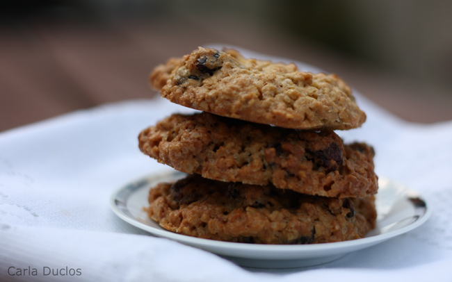

Cookie de aveia com chocolate Tipo da Receita: Sobremesa Dificuldade: facil
Ingredientes
1 xícara (chá) de farinha de trigo integral
1 xícara (chá) de Aveia Flocos NESTLÉ®
1 xícara (chá) de açúcar mascavo
meia colher (chá) de fermento em pó
1 ovo
2 colheres (sopa) de manteiga
1 colher (sopa) de sementes de linhaça
4 colheres (sopa) de castanhas-de-caju picadas
100 g de Gotas de Chocolate Amargo GAROTO®
Modo de fazer
Em recipiente, misture a farinha de trigo integral, a NESTLÉ Aveia, o açúcar mascavo e o fermento em pó.
Adicione o ovo e a manteiga e misture com uma colher até ficar homogêneo. Acrescente a linhaça, as
castanhas-de-caju e metade das Gotas de Chocolate Amargo GAROTO.
Modele os cookies com o auxílio de 2 colheres e coloque em uma assadeira, deixando um espaço entre eles.
Finalize com as Gotas de Chocolate restantes e leve ao forno médio (180°C), preaquecido, por cerca de 15
minutos ou até dourar levemente nas laterais.